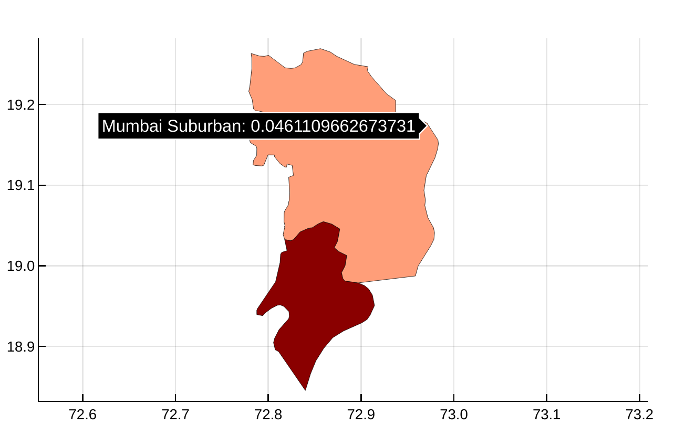

NighttimeLights.plot_chloropleth — MethodPlots a chloropleth map using a vector of values and a shapefile. A symbol indiciating the column which contains the names of the polygons (or any column) should be passed to the function.
load_example()
code = rand(2)
plot_chloropleth(mumbai_map, code, :DISTRICT)NighttimeLights.plot_chloropleth — MethodThe plot_chloropleth can use a column name to plot instead of a vector of values.
load_example()
plot_chloropleth(mumbai_map, :censuscode, :DISTRICT)
NighttimeLights.plot_img — MethodThe plot_img function plots a 2D matrix and paints a grid of latitudes and longitudes using the specified coordinate system.
load_example()
april2012 = radiance_datacube[:,:,1]
plot_img(april2012, MUMBAI_COORDINATE_SYSTEM)NighttimeLights.plot_datacube — MethodThe plot_datacube function plots the individual images of a datacube and paints a grid of latitudes and longitudes using the specified coordinate system. It compiles all the images in a PDF file. It uses a vector of dates to put a title on each image.
using Dates
load_example()
dates = collect(Date(2012,4):Month(1):Date(2020, 02))
plot_datacube(radiance_datacube, MUMBAI_COORDINATE_SYSTEM, string.(dates), "Mumbai.pdf")